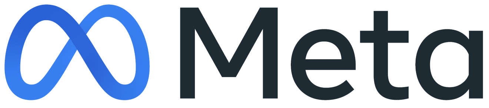
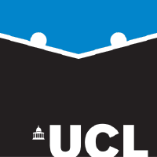

— About
Hi, I'm Lovish! I am pursuing my PhD at MSL, Meta and UCL NLP. My current focus is on thinking models, reinforcement learning, and self-improvement.
In the past, I worked at Google Research India in the Machine Learning and Optimization Team with Prateek Jain and Srinadh Bhojanapalli on inference-efficient machine learning and natural language processing.
I graduated with a B.Tech and M.Tech in Computer Science and Engineering from the Indian Institute of Technology, Delhi. I worked with Parag Singla, Sayan Ranu, and Aaditeshwar Seth on a variety of research projects during my time there.
Selected publications
* — equal contribution

